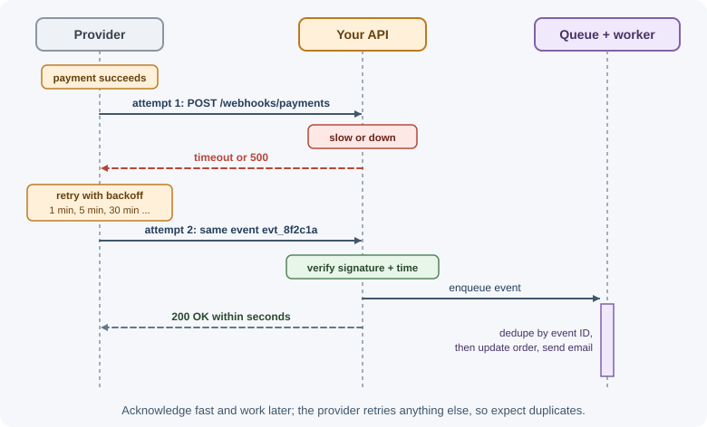
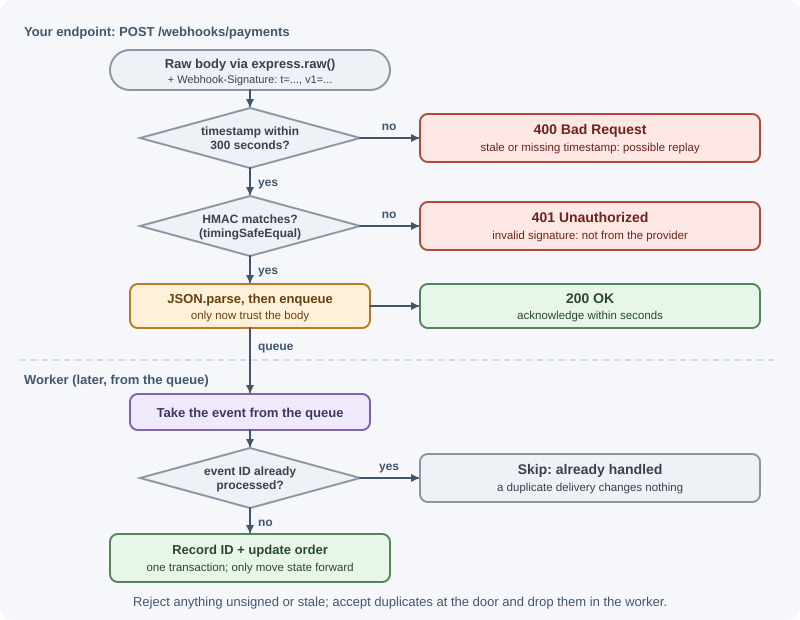

Webhooks¶
A webhook is an HTTP request one server sends to another when an event happens: "a payment succeeded", "a pull request was opened", "an SMS was delivered". Instead of your backend repeatedly asking a provider "anything new?", the provider calls a URL you registered and pushes the event to you. Webhooks are how most third-party services (payments, Git hosting, messaging, e-commerce) notify your system.
Why it matters¶
- Real-time integration without polling. You learn about events seconds after they happen, without wasting requests asking for nothing.
- Many business flows depend on them. An order is often marked paid only when the payment provider's webhook arrives, not when the user returns from the checkout page.
- They are an attack surface. A webhook endpoint is a public URL that changes your data. Without signature verification, anyone can forge "this invoice was paid".
- They fail in specific ways. Duplicate deliveries, out-of-order events, and retries are normal, and code that ignores them double-ships orders or loses updates.
Real-world usage¶
- Stripe. Stripe signs every event in a
Stripe-Signatureheader and requires the raw request body for verification. Its libraries reject events whose timestamp is more than 5 minutes from the current time by default, and it recommends NTP so your clock stays accurate. In live mode, Stripe retries failed deliveries for up to three days with exponential backoff. It does not guarantee event order and tells you to track event IDs to detect duplicates. It also asks endpoints to return2xxbefore any complex logic. - GitHub. GitHub sends an HMAC-SHA256 of the payload in the
X-Hub-Signature-256header (sha256=<hex>). Your server should respond with2xxwithin 10 seconds or GitHub considers the delivery failed, and it suggests a queue for the real work. GitHub does not automatically redeliver failed deliveries; you redeliver them manually or with code. TheX-GitHub-Deliveryheader helps detect replays. - Shopify. Each HTTPS webhook includes a
base64-encoded HMAC in
X-Shopify-Hmac-SHA256, computed with the app's client secret over the raw request body; Shopify's own Express sample usesexpress.raw()andcrypto.timingSafeEqual.
The three providers disagree on header names, encodings (hex or base64), and retry behavior, which is why you always follow the provider's documentation.
How it works¶
Webhooks vs polling¶
Polling: your server asks repeatedly
you --GET /payments?since=...--> provider "nothing"
you --GET /payments?since=...--> provider "nothing"
you --GET /payments?since=...--> provider "payment pi_1 succeeded"
Webhook: the provider tells you once
provider --POST /webhooks/payments {"type":"payment.succeeded",...}--> you
you --200 OK--> provider
| Polling | Webhooks | |
|---|---|---|
| Latency | Up to the polling interval | Near real-time |
| Wasted requests | Many empty responses | Only real events |
| Needs a public endpoint | No | Yes |
| Reliability | You control retries | You depend on the provider's retries, plus reconciliation |
| Complexity | Simple | Signature verification, deduplication, ordering |
Many systems use both: webhooks for speed and a periodic reconciliation job that polls the provider's API to catch anything missed.
The provider side¶
A provider that offers webhooks:
- Lets customers register endpoints (a URL plus the event types they want) and gives each endpoint a signing secret.
-
Builds an event payload when something happens, with a unique event ID, type, timestamp, and data:
{ "id": "evt_8f2c1a", "type": "payment.succeeded", "createdAt": "2026-11-03T10:15:00Z", "data": { "paymentId": "pay_501", "orderId": "ord_901", "amount": 4999, "currency": "USD" } } -
Signs the payload with an HMAC of the timestamp and body using the endpoint's secret, and sends it in a header.
- Delivers it with
POST, a short timeout, and treats any2xxas success. - Retries failures (timeouts, connection errors, non-
2xx) with exponential backoff over hours or days, then marks the endpoint as failing and alerts the customer. - Offers tools: a delivery log, manual re-send, and test events.
Providers deliver at least once, so duplicates are expected, and they generally do not guarantee ordering.
The consumer side (your endpoint)¶
Your job when receiving a webhook, in order:
- Expose a public HTTPS endpoint, such as
POST /webhooks/payments. - Read the raw body. The signature is computed over the exact bytes sent. If a JSON parser re-serializes the body first, whitespace or key order may change and verification fails.
- Verify the signature by recomputing the HMAC with your secret and comparing it to the header using a constant-time comparison.
- Check the timestamp against your clock (for example within 5 minutes) to reject replayed old requests.
- Deduplicate by event ID. If you have already processed
evt_8f2c1a, acknowledge and do nothing. - Respond
2xxquickly, ideally within a few seconds. Providers time out slow endpoints and retry, causing more duplicates. - Process asynchronously: put the event on a queue and let a worker do the slow work (database updates, emails, calls to other APIs).
- Handle ordering yourself. A
payment.refundedevent can arrive beforepayment.succeeded. Use timestamps or version numbers, or fetch the current state from the provider's API instead of trusting event order.

How HMAC signatures work¶
HMAC (hash-based message authentication code) combines a secret key with the message and a hash function such as SHA-256. Only someone with the secret can produce the right value, and changing a single byte of the message changes the result completely.
signature = HMAC-SHA256(secret, timestamp + "." + rawBody)
header = "t=1762164900,v1=5257a869e7ecebeda32affa62cdca3fa51cad7e77a0e56ff536d0ce8e108d8bd"
Including the timestamp in the signed content prevents an attacker from re-sending an old captured request with a fresh timestamp.
Signature formats vary by provider (header names, encoding as hex or base64,
what exactly is signed). Always follow the provider's documentation, and use
their official SDK verification function when one exists. An open
specification called Standard Webhooks defines a common format some
providers follow: it sends webhook-id, webhook-timestamp, and
webhook-signature headers, signs id.timestamp.body, and encodes the
signature in base64 with a v1, prefix. The examples on this page use a
simpler, illustrative format (t=<timestamp>,v1=<hex> over
timestamp.body), not the Standard Webhooks wire format.

Security checklist¶
- HTTPS only, so payloads and signatures cannot be read or altered in transit.
- Verify every signature; reject unsigned or invalid requests with
400or401. - Use constant-time comparison (
crypto.timingSafeEqual), never===, to avoid timing attacks. - Enforce a timestamp tolerance against replays.
- Keep secrets in configuration and support two active secrets during rotation.
- Limit the body size and the route's rate.
- Treat the payload as a hint for sensitive actions. For high-value events, re-fetch the object from the provider's API using your API key before acting.
- Return generic errors; do not echo internal details.
- IP allowlists (if the provider publishes its ranges) are an extra layer, never a replacement for signatures.
- As a provider, guard against SSRF: customers supply URLs, so refuse to deliver to private, loopback, or cloud-metadata addresses.
Testing locally¶
Providers cannot reach localhost. Options:
- Tunnels such as ngrok or Cloudflare Tunnel give your local server a temporary public HTTPS URL to register with the provider.
- Provider CLIs forward events to your machine, for example
stripe listen --forward-to localhost:3000/webhooks/stripe. - Replay saved payloads with curl, computing a valid signature in a small script, so tests do not depend on the provider.
- Use the provider's "send test event" button from its dashboard.
When to use and when not to use¶
Use webhooks when:
- Another system must learn about events soon after they happen (payments, repository pushes, delivery receipts).
- Events are infrequent compared to how often you would have to poll.
- The receiver can expose a public HTTPS endpoint.
Prefer something else when:
- The receiver cannot accept inbound connections (a desktop app, a device behind a firewall): poll, or use a long-lived outbound connection.
- You need guaranteed, ordered delivery between your own services: use a message queue.
- A browser needs live updates: use SSE or WebSockets from your backend.
- Missing an event would be costly: keep webhooks, but add periodic reconciliation by polling.
| Option | Latency | Who opens the connection | Delivery guarantees | Typical use |
|---|---|---|---|---|
| Webhooks | Seconds | Provider calls you | At least once, unordered, provider-specific retries | Third-party event notifications |
| Polling | Up to the interval | You call the provider | You control retries | Reconciliation, receivers that cannot be reached |
| Message queue | Milliseconds to seconds | Both connect to a broker | Configurable, durable | Events between your own services |
| SSE / WebSockets | Milliseconds | Client connects to server | While connected | Live updates to browsers and apps |
Practical examples¶
A complete Express receiver¶
import express from "express";
import { createHmac, timingSafeEqual } from "node:crypto";
const app = express();
const WEBHOOK_SECRET = process.env.WEBHOOK_SECRET; // shared with the provider
const TOLERANCE_SECONDS = 300; // reject events older than 5 minutes
// Register BEFORE any global express.json(), so this route gets raw bytes
app.post(
"/webhooks/payments",
express.raw({ type: "application/json", limit: "1mb" }), // req.body is a Buffer
async (req, res) => {
// Header format used in this example: "t=<unix seconds>,v1=<hex HMAC>"
const header = req.get("Webhook-Signature") ?? "";
const parts = Object.fromEntries(header.split(",").map((part) => part.split("=", 2)));
const timestamp = Number(parts.t);
const received = parts.v1 ?? "";
// 1. Replay protection: the timestamp must be recent
const ageSeconds = Math.abs(Date.now() / 1000 - timestamp);
if (!Number.isFinite(timestamp) || ageSeconds > TOLERANCE_SECONDS) {
return res.status(400).send("stale or missing timestamp");
}
// 2. Recompute the signature over "<timestamp>.<raw body>"
const expected = createHmac("sha256", WEBHOOK_SECRET)
.update(`${timestamp}.`)
.update(req.body)
.digest("hex");
// 3. Constant-time comparison; timingSafeEqual needs equal lengths
const a = Buffer.from(received, "hex");
const b = Buffer.from(expected, "hex");
if (a.length !== b.length || !timingSafeEqual(a, b)) {
return res.status(401).send("invalid signature");
}
// 4. Only now trust and parse the body
const event = JSON.parse(req.body.toString("utf8"));
// 5. Hand off and acknowledge fast; the worker deduplicates by event.id
await jobQueue.add("payment-event", event);
res.sendStatus(200);
},
);
app.use(express.json()); // the rest of the API parses JSON normally
app.listen(3000);
jobQueue stands for a queue client such as BullMQ. See
background jobs and scheduling.
The worker: idempotent processing¶
async function handlePaymentEvent(event) {
// A unique index on processed_events.event_id makes duplicates fail the insert.
// Do the insert and the business change in ONE transaction so they succeed or fail together.
await db.transaction(async (tx) => {
const firstTime = await tx.processedEvents.insertIfAbsent({ eventId: event.id });
if (!firstTime) return; // duplicate delivery: already handled
if (event.type === "payment.succeeded") {
// Guard against out-of-order events: only move forward in the state machine
await tx.orders.markPaidIfPending(event.data.orderId);
}
});
}
The provider side: signing and delivering¶
import { createHmac } from "node:crypto";
export async function deliverWebhook(endpoint, event) {
const body = JSON.stringify(event);
const timestamp = Math.floor(Date.now() / 1000);
const signature = createHmac("sha256", endpoint.secret)
.update(`${timestamp}.${body}`)
.digest("hex");
const res = await fetch(endpoint.url, {
method: "POST",
headers: {
"Content-Type": "application/json",
"Webhook-Id": event.id,
"Webhook-Signature": `t=${timestamp},v1=${signature}`,
},
body,
signal: AbortSignal.timeout(10_000), // never wait forever on a customer's server
});
// Non-2xx: throw so the job queue retries with exponential backoff
if (!res.ok) throw new Error(`Webhook delivery failed with status ${res.status}`);
}
Sending a signed test event with curl¶
BODY='{"id":"evt_test_1","type":"payment.succeeded","data":{"orderId":"ord_901"}}'
TS=$(date +%s)
SIG=$(printf '%s' "$TS.$BODY" | openssl dgst -sha256 -hmac "$WEBHOOK_SECRET" -hex | sed 's/^.* //')
curl -i -X POST http://localhost:3000/webhooks/payments \
-H "Content-Type: application/json" \
-H "Webhook-Signature: t=$TS,v1=$SIG" \
--data "$BODY"
Best practices¶
- Verify signatures over the raw body with a constant-time comparison.
- Reject stale timestamps to stop replays.
- Acknowledge fast, process later through a queue.
- Make processing idempotent with a unique constraint on the event ID.
- Never rely on ordering; use state machines, timestamps, or re-fetch current state.
- Reconcile periodically by polling the provider's API for anything missed.
- Log every delivery (event ID, type, result) without logging secrets or sensitive payload fields.
- Monitor failures: a stream of
401s often means a rotated secret. - As a provider: sign payloads, retry with backoff, document the format, offer a delivery log and re-send, and block private network targets.
In production¶
- Every webhook suddenly fails verification.
Detect: a wall of
400/401responses in the provider's delivery log and your logs, starting with a deploy. Cause: a global body parser now runs before the webhook route, so the raw bytes are gone; or the signing secret was rotated in one place only. Fix: give the webhook route its own raw-body parser and accept both the old and new secret during rotation. - Duplicate side effects such as emails sent twice. Detect: the same event ID appears several times in logs, usually after slow responses or redeliveries. Cause: the endpoint took too long, the provider recorded a failure and the event was delivered again (by an automatic retry, as with Stripe, or a redelivery), and the handler is not idempotent. Fix: acknowledge fast, queue the work, and deduplicate by event ID with a unique constraint.
- Valid events rejected as stale. Detect: "stale timestamp" rejections on one server only. Cause: that server's clock drifted. Fix: run NTP, which Stripe explicitly recommends, and alert on clock skew.
- Events lost during an outage. Detect: gaps between the provider's data and yours after your endpoint was down. Cause: retries exhausted, or a provider that does not retry automatically, such as GitHub. Fix: redeliver failed deliveries from the provider's log or API, and run a reconciliation job.
- Newer state overwritten by an older event. Detect: an order shows "paid" although the provider says "refunded"; logs show the events processed out of order. Cause: trusting arrival order. Fix: only move forward in a state machine, compare event or object timestamps, or re-fetch the object from the provider's API.
Important terminology¶
- Webhook: an HTTP callback a server sends when an event occurs.
- Webhook endpoint: the URL a consumer registers to receive events.
- Event payload: the JSON describing what happened.
- HMAC: a keyed hash that proves a message came from someone holding the secret and was not changed.
- Signing secret: the shared key used to compute and verify HMAC signatures.
- Replay attack: re-sending a captured valid request.
- At-least-once delivery: every event is delivered one or more times; duplicates are possible.
- Idempotent consumer: a receiver that produces the same result no matter how many times an event arrives.
- Reconciliation: periodically comparing your data with the source of truth to repair gaps.
- Tunnel: a service exposing a local server at a public URL for testing.
Common mistakes and misconceptions¶
- Skipping signature verification because "nobody knows the URL". URLs leak through logs, screenshots, and guessing.
- Verifying against parsed and re-serialized JSON instead of the raw bytes, so valid signatures fail (or developers disable the check).
- Comparing signatures with
===, which can leak timing information. - Doing slow work before responding, causing timeouts and duplicate retries.
- Assuming exactly-once, in-order delivery and double-processing payments or applying stale updates.
- Returning
500for events you don't handle. Acknowledge unknown event types with200so the provider stops retrying. - Global
express.json()registered before the webhook route, consuming the raw body.
Revision questions¶
- Compare webhooks and polling. Why do many systems use both?
- Why must the signature be verified against the raw body?
- What attack does the timestamp in the signed content prevent?
- Why should a webhook endpoint respond quickly and process the event asynchronously?
- How do you make a webhook consumer safe against duplicate deliveries?
- A
refundevent arrives before thepayment.succeededevent for the same payment. How should your system handle it?
Further learning¶
- RFC 2104: HMAC: Keyed-Hashing for Message Authentication.
- Node.js: Crypto module documents
createHmacandtimingSafeEqual. - Express: express.raw() for receiving the raw request body.
- MDN: POST method.
- Related: timeouts, retries, and idempotency and message queues.